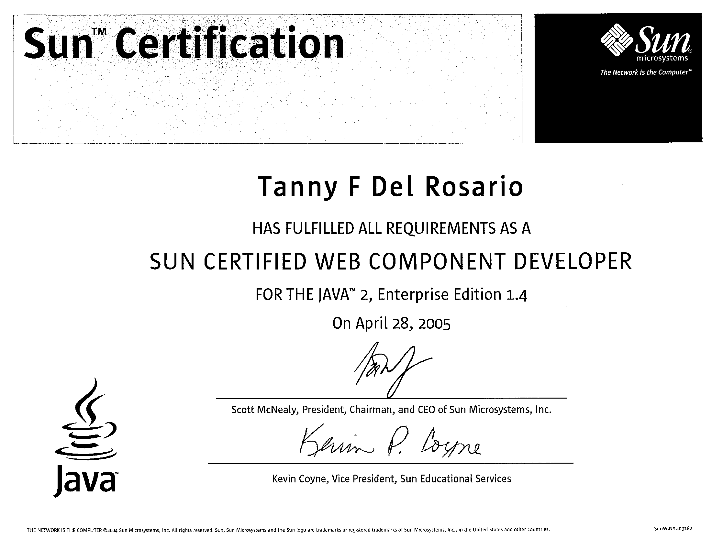

IBM Certified Cloud Application Developer - Cloud Platform V1
Sun Certified Web Component Developer for J2EE 1.4

Sun Certified Java 2 Programmer
Sun Certified Java Programmer
21 years of work experience in enterprise/ web application design and development using HTML, CSS, Javascript, Java and other technologies;
4 years of Lead role experience;
Experienced requirements gathering, analysis and design, coding, testing and debugging, and support;
Software Architecting/ Engineering;
Enterprise/ Web application design and development using Java, HTML, CSS, Javascript, and other related technologies;
Proficient in IBM WebSphere and Rational products such as WebSphere Portal Server, WebSphere Application Server, WebSphere Rational Application Developer, Rational Team Concert, and Rational Software Architect;
Instructor and facilitator in Java Bootcamps in IBM;
Conducted trainings for the Java programmer trainees;
Also conducted Java trainings in USA for professional certification of the students;
Graduate of Bachelor of Science in Computer Engineering;
Recognized as one of the Top Value Creators;
Was awarded the Award of Excellence for Outstanding Professional Initiative and Performance;